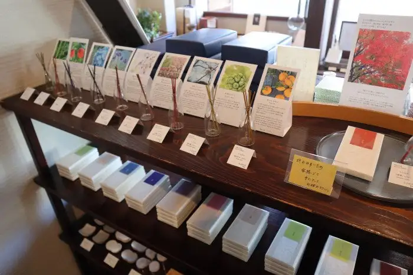
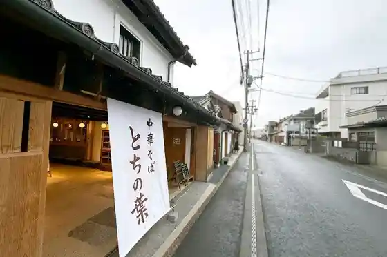
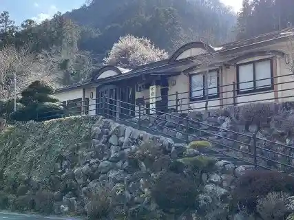
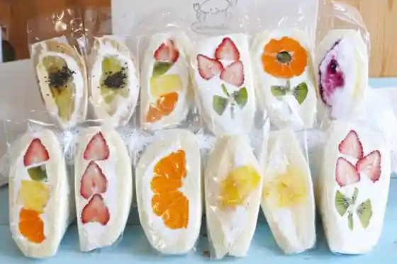
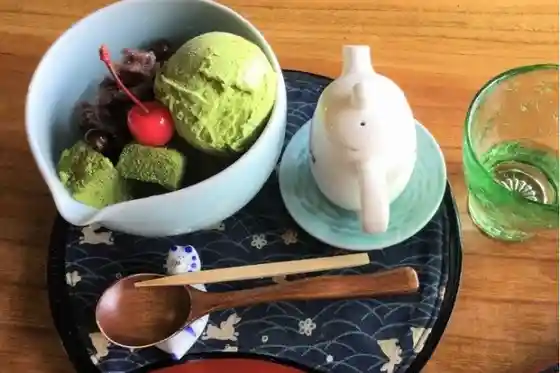

Tochigi
Tochigi · Tochigi
Tochigi
Highlighted on the Tochigi map.

Sights
Tochigi Sei Kaori Tokoro (Kyu Ran to Gatsu Tochigi Mise)
Chuka Soba Tochi no Ha

Soba Tokoro Satoya

eat me sandwich

Ko Minka Kafe Funami Chake Ikoi Tokoro Sei

Shutsu Nagareyama Mangan Tera
Taiheizan (Taiheizan Prefectural Nature Park)
Yamada Ie
Tochigi Utamaro Koryu Kan
Kana Han Ryokan
Tochigi Gu Land Hotel
Reihei Shi Kaido
Heichi no San Kenzakai
Tatsuoki Tera no Shidarezakura
Uzuma Kawa
Fujioka Hiyajiru
Hoshino Iseki
Hoshino Iseki Chiso Tanken Kan
Shiki no Mori Hoshino (Setsubun Kusa)
Yakushido (Tetsuzo Kusurishi Nyorai Zazo)
Tochigi Ritsu Literature Museum
Tochigi Ie
Matsuno Ie
Teuchi Chisoba
Yamamoto Yuzo Furusato Memorial Museum
Watarase Sports Park
Ogaki Katakuri Village
Experience Katsudo Center Watarase
Roadside Station Nishikata
Hana Yuki Ko no Sato
Tourist Farm (Aguri no Sato)
Sukaidaibingu
Tochigi Kura no Machi Kanko Kan
Sakura Otome (Tochigi Seiho San Koshihikari)
Happyaku Bikuni Park
Shimotsuke Kokucho Ato
Shimotsuke Kokucho Ato Museum
Seiho Fureai Park (Seiho General Park)
Mikamo Yama Park
Roadside Station Mikamo
Azuma Ie
Izumi Ie
JA Shimotsuke Oide Yado Sato no Eki
Okada Memorial Museum (Daikan Residence Okina Shima)
Abura Den Miso
Shutsu Ryu Teuchi Soba Fukuju Ya
Hoshino Shizen Village